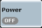
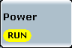

Measurement Control
Measurements can be in the "RUN", "RDY", or "OFF" states. In the default configuration, all measurements are switched off; no results are available. The measurement state is shown on the measurement control softkey.

To turn the measurement on or off:
Select the measurement control softkey and press ON | OFF or RESTART | STOP.
Alternatively, right-click the measurement control softkey. Click ON, OFF, RESTART or STOP.
The behavior of the measurement control softkey depends on the "Repetition" mode selected in the configuration dialog:
- If the measurement is turned on in single-shot repetition mode, it enters the "RUN" state and returns to "RDY" when a single-shot result has been acquired.
- If the measurement is turned on in continuous repetition mode, it remains in the "RUN" state until it is turned off explicitly.
